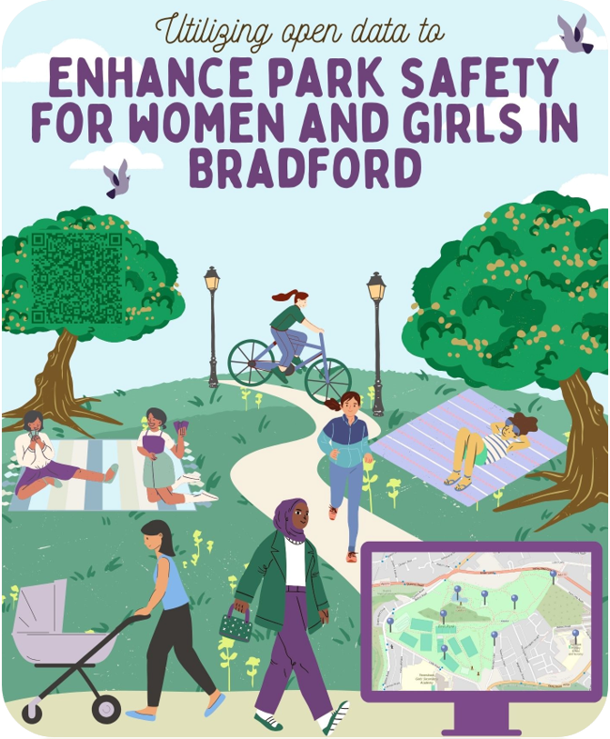

Safer Parks
Improving Park Access for Women and Girls
Parks have numerous benefits for health and wellbeing yet concerns about safety can constrain women and girls' use and experience of them.
What can open data tell us about park safety for women and girls?
Spatial data will capture priority areas for improving safety, including: park layout and access; lighting; vegetation; crime rates; and park user information.

This project aims to integrate the Safer Parks: Improving Access for Women and Girls research and guidance into local authorities' decision-making processes by providing a quantitative assessment of park safety using open-source data.